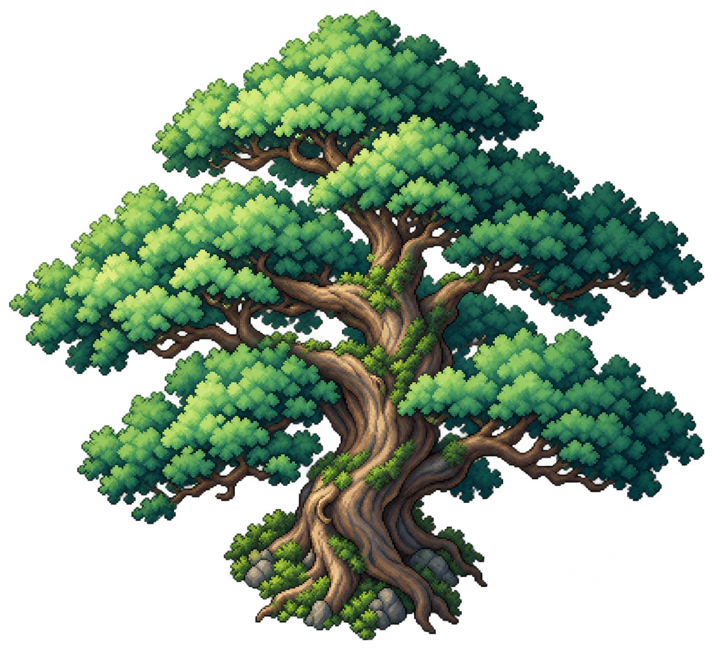
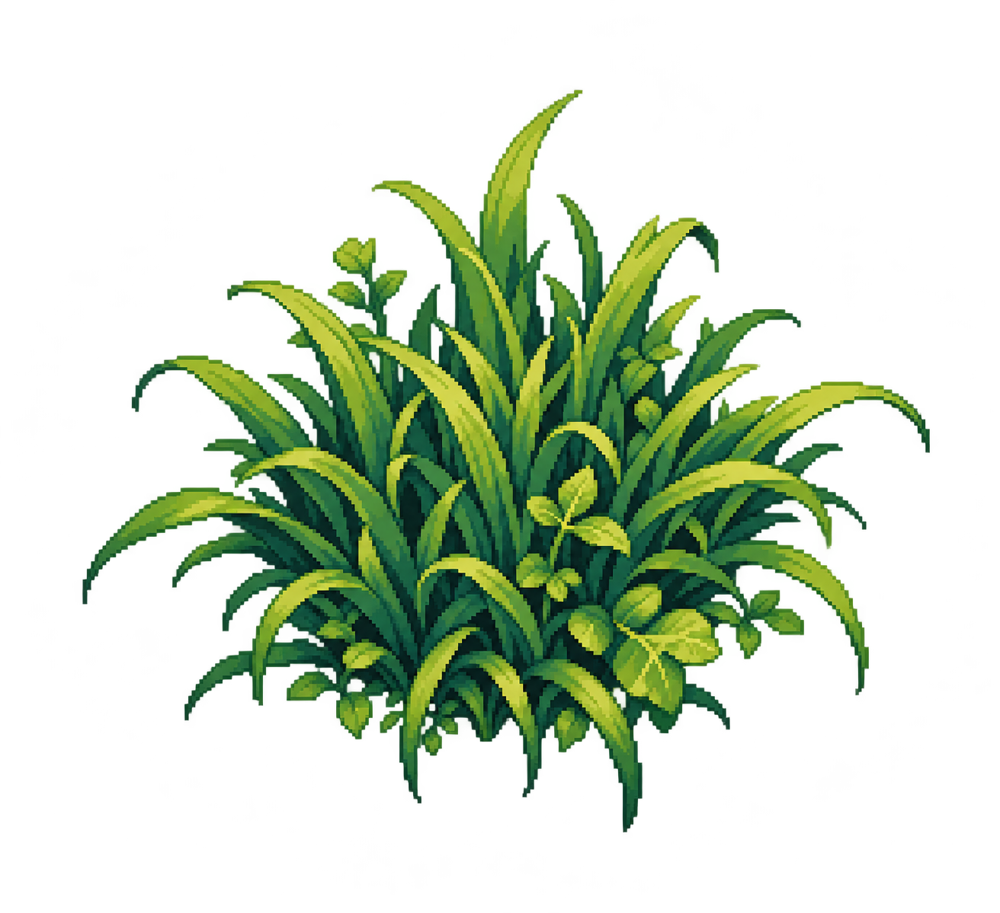
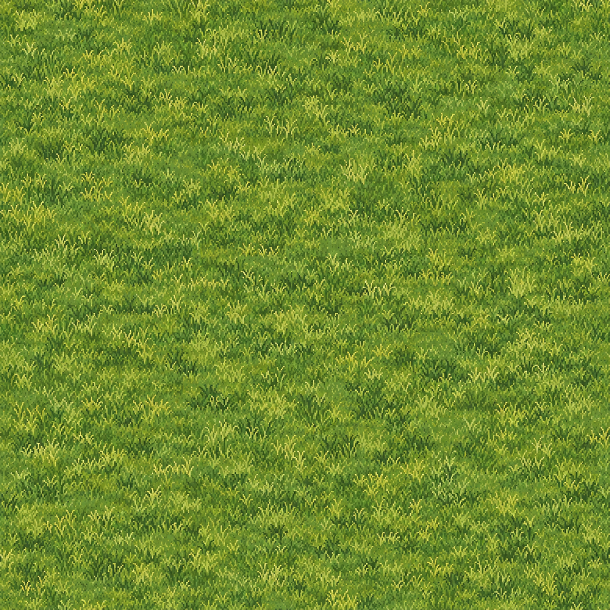
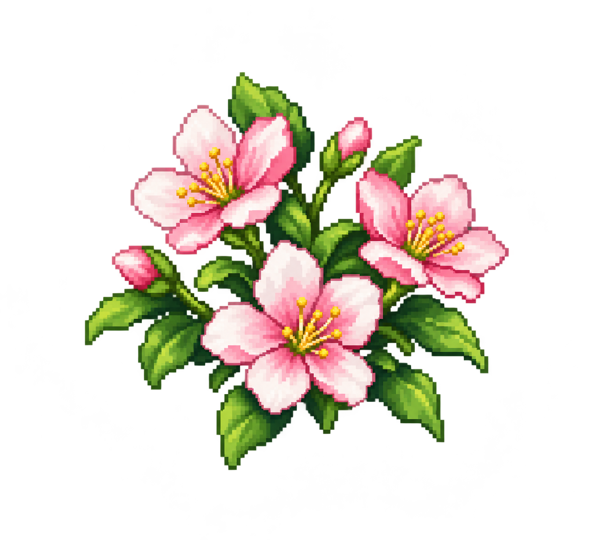
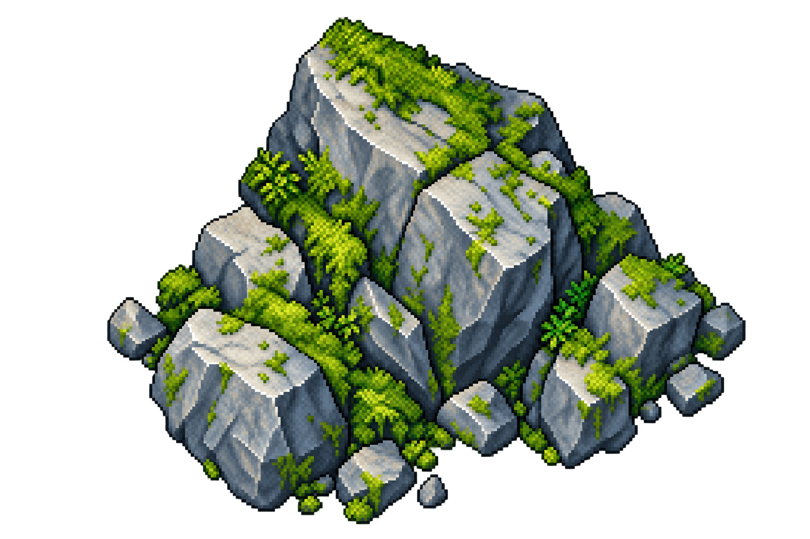
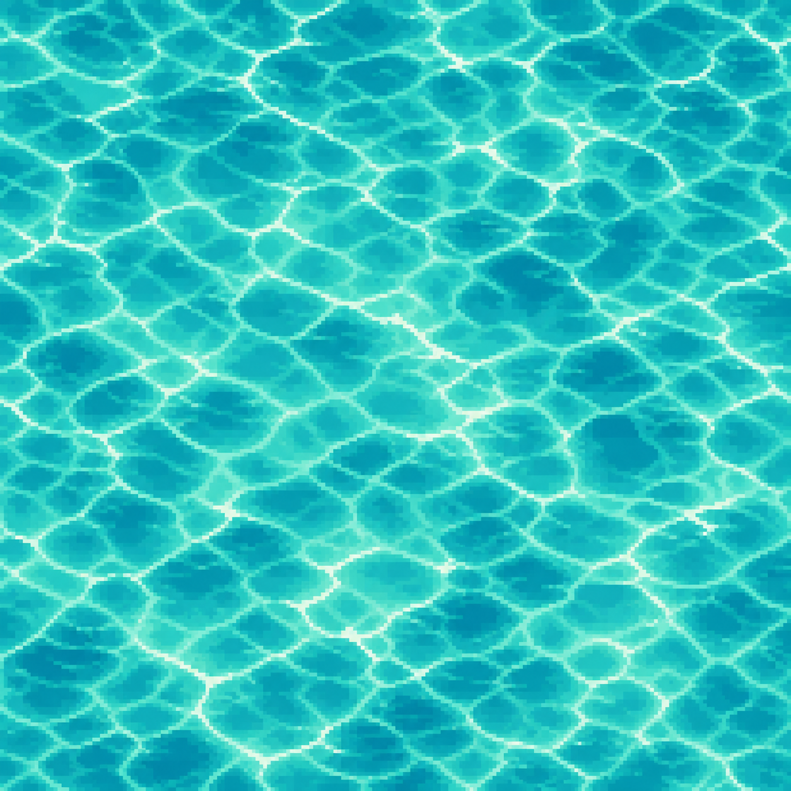
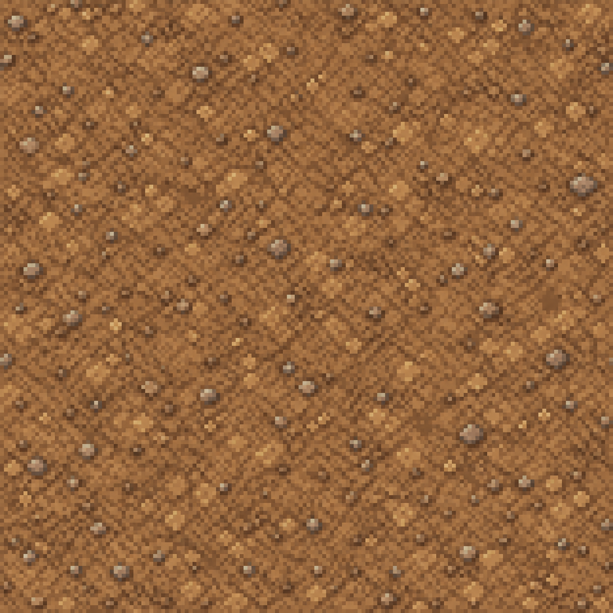
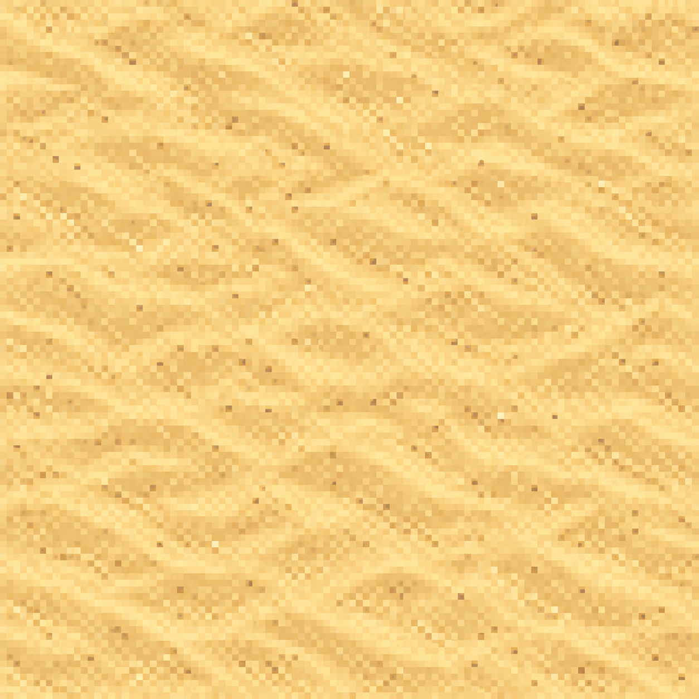

Bộ môi trường Demo A · lượt 2
Cây, cỏ, hoa, đá là sprite nền trong suốt. Sân cỏ, nước, đất, cát là texture phủ kín. Prompt và ghi chú sản xuất.








Cây, cỏ, hoa, đá là sprite nền trong suốt. Sân cỏ, nước, đất, cát là texture phủ kín. Prompt và ghi chú sản xuất.







